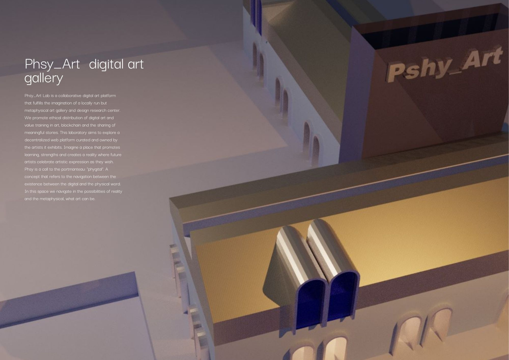

Responsible Research Innovation Framework
Rethinking the technological landscape: Communal digital art platform for artistic collaboration and agency.
In the beginning of the term, my main goals and idea was tocreate a platform using Web 3.0 tech, implementing decentralised networks to be accessed and used by everyday artists and creatives. I took some influence and ideas from Muzee Decentral and DoinGud, who are both involved in the NFT and blockchain space in art, but somehow my ideas in conscious info + tech in thinking about sustainability of NFTs conflicted with some the framework and practices of both these organizations. I was moved by the presentation during our Design studio, imagining the value and natures existing in current NFT minting to be focused not on individuals but on abundant community thinking. In this I though of Pshy_Art Lab.
Phsy_Art Lab is a collaborative digital art platform that fulfills the imagination of a locally run but metaphysical art gallery and design research center. We promote ethical distribution of digital art and value training in art, blockchain and the sharing of meaningful stories. This laboratory aims to explore a decentralized web platform curated and owned by the artists it exhibits. Imagine a place that promotes learning, strengths and creates a reality where future artists celebrate artistic expression as they wish. Phsy is a call to the portmanteau: "phygital". A concept that refers to the navigation between the existence between the digital and the physical word. In this space we navigate in the possibilities of reality and the metaphysical, what art can be.
 Here I am continuously learning how to form a self governing online platform. Decisions get made from the bottom-up, governed by a community organized around a specific set of rules enforced on a blockchain.
Firstly I reached out to Muzee Dezentral and also, I am also part of the Discord on Buildspace if I have any questions on how to get help in running things online. For the next iteration I would like the 3D space to be live online, yet for now it will be an online platform for talking and sharing.
I asked friends and classmates to contribute their stories and art that will be showcased in the DAO. I helped launch NFT art for a friend aswell, showcased it on social media platforms and will have their own website at the end of March. In the next iteration, I would like to have a round table discussion together with the artist to understand how we can spread knowledge about self governance in the internet, the usage of NFT art. 27th of March, I am joining a drawing class on Meet up , and will reach out to artists from Hanger and Fabra i Coats for possible collaborations and just asking their needs as artists.
Modeling a preliminary model of the gallery exhibiting art from artists and classmates so far. I also started a Discord and simple webpage where I can give a call to action for artists to join, and a place to share ideas and discuss. Here you can see the living and Phsy_Art Lab which is a living project that will be expanded and continuously changing
Join the discord by clicking on the link above.
Applying the RRIF from Sergio Uerena, this is how I plan to Integrate my responsibilities in rethinking the technological landscape, going beyond just a workshop. I will apply the Socio- technical innovation Framework, to anticipate ideas and collaborations from a bottom up approach in a question answer format. Coming from the design studio, what I took away is the RRIF will help build my design practice beyond the Master, and a framework for the future of designing. Building in an ethos centered in an ongoing process, and working in a community.
I further unpack my RRFI and Multi scalar diagram through my design space found here
For this intervention I focused on the responsiveness factor of the through the RI Tool, using the two guiding questions below followed by responsibility that I aim to apply in this intervention and further iterations:
Q1: How do I Create a Resilient, Adaptable Research Innovation System? Am I committed enough to my project? What assumptions, values and interests underpin my project, what extent do I have to reflect on them?
Q2: How do I foster a digital // online platform that fosters diversity?
created with

Introducing: Phsy_Art Lab
Launching the Pshy_Art Lab
1. Learning How to create DAO using Buildspace


2.Reaching out to existing DAOs- asking for advice, mentorship or chatting about this new platform

3. Reaching out to artist and creatives
Creating Phygital Spaces for meeting.

Responsibility check! RRFI
How can Rethinking my psyche in how I work, how can I be aware of my responsibility, working in Pshy_Art Lab
- After seeing the ice-berg paradigm, I reflected my ideations to rethink the technology.
- How can I build a Deconstructing the networks of NFTs and blockchains where the systems benefit the whole , rather than individuals.
- Build my systems with an abundance paradigm, rather than ownership and individual expression.
- Instead of perpetuity of individual, what about re-thinking in terms of collective.
How can I embrace the socio-technical, systemic approach?
- Working with nuance and incorporating non human actors ( in my case, things
- When I create things, I should consider that I create the politics of things, enacted and becoming actors of the systems I create.
- Creating Imaginations and taking into account things that are alive and have agency that are non-human.
Applying The Responsible Research Innovation Framework

Designing for Responsiveness a reflection
- Resilience is usually associated with natural hazards, yet it commonly denotes the capacity to “bounce back” from disruptions.
- Promote easy access to the DOA for everyone
- Expand communication and collaboration, creating network,
- Take into account potential vulnerabilities and take action to ask for help to improve systems, ways of working and collaborating
- Building social connectedness, creating regular involvement.
- Reach out to at risk communities and artists within Barcelona
- Be mindful in including minorities in artists, storytellers and members of the community
Developing Mode Preview